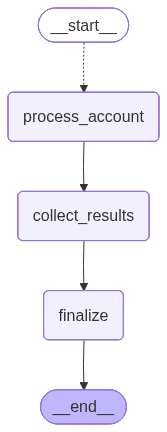
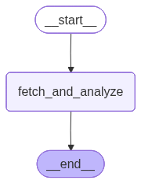

Architecture
How the AI pipeline works
A two-graph LangGraph system that fetches account data, runs parallel LLM analysis, and produces consulting-grade reports with sales scripts.
Overview
The backend is a Python agent built on LangGraph and served via CopilotKit. It exposes tools that the chat UI can invoke: selecting accounts, finding opportunities, generating reports, and editing them conversationally.
All heavy lifting happens in two LangGraph StateGraph pipelines. The chat agent orchestrates them but never sends large data payloads through the chat channel. Data stays server-side; only summaries reach the user.
Key principle: the agent fetches data from the Next.js API, processes it through LLM pipelines, and writes results back to the database. The frontend reads from the DB via React Query. Chat is for coordination, not data transport.
The two LangGraph pipelines


Report Generation Graph
Handles the core workload: turning account data into full reports with sales scripts. The graph uses LangGraph's Send() primitive for fan-out parallelism.
| Node | What it does |
|---|---|
| fan_out | Reads account_ids from state and emits one Send("process_account", ...) per ID. LangGraph runs all of them concurrently. |
| process_account | Runs once per account in parallel. Fetches the account summary and historical deals, calls the LLM twice (report + sales script), then saves the result to the database via the Next.js API. |
| collect_results | No-op. Results from each process_account fork are already merged into the parent state via an operator.add reducer on the results and errors fields. |
| finalize | No-op. The graph returns the final aggregated state to the caller. |
Opportunities Graph
A simpler, single-node pipeline. When the user clicks "Find Opportunities," this graph receives a batch of account IDs, fetches all their summaries in one API call, and sends the full dataset to the LLM for triage.
| Node | What it does |
|---|---|
| fetch_and_analyze | Fetches summaries for all candidate accounts, builds a compact JSON payload, sends it to the LLM with classification instructions (upsell / renegotiation / churn risk), and parses the recommended account IDs from the response. |
Data flow in detail
1. Account data ingestion
Account data lives in PostgreSQL, managed by Drizzle ORM in the Next.js app. The schema uses a flexible account_usage_metrics table (key-value: metric name, current value, limit value, unit) instead of rigid per-metric columns. This means any metric the user tracks (seats, API calls, storage, automation runs) is captured without schema changes.
The Python agent fetches data through the Next.js REST API (/api/account_summaries), not directly from the database. Responses are cached in a file-based JSON cache with configurable TTL (1 day in dev, 10 minutes in prod).
2. Two-pass LLM analysis
Each account goes through two sequential LLM calls within the process_account node:
- Pass 1: Analytical report. The LLM receives the account summary and 5-8 relevant historical deals (filtered by tier match and deal outcome). It produces a structured markdown report with situation analysis, key metrics, risk assessment, and next steps. The last line of output is a JSON metadata object with
proposition_type,success_percent,intervene,priority_score, andscore_rationale. - Pass 2: Sales script. Using the report from Pass 1 as context, a second LLM call generates a tailored sales script with talk tracks, objection handlers, and a closing framework. The script is appended to the report body before saving.
Why two passes? The analytical report and sales script serve different audiences and require different tones. Separating them lets each prompt focus on one task, producing better output than a single monolithic prompt. The second pass benefits from having the structured analysis as context.
3. Historical deal matching
Before calling the LLM, the pipeline filters the historical deals library to find the most relevant precedents. Deals are scored by:
- Tier match (+3): same pricing tier as the account
- Successful outcome (+2): deal was won/closed-won
- Deal size proximity (+1): deal size within 0.5x-3x of the account's annual contract value
The top 8 deals are passed to the LLM as evidence for its recommendations.
4. Report persistence
Reports are saved as raw markdown via POST /api/accounts/:id/account_reports. The database supports multiple reports per account (regeneration creates a new row, never overwrites). The frontend renders markdown using custom React components per section, with react-markdown as fallback.
Each report section is editable individually: users can edit by hand in the modal, or ask the AI via chat. The agent state tracks report_manually_edited and report_latest_content so it always fetches the latest version before applying changes.
Parallel processing
Fan-out with Send()
The report generation graph processes accounts in parallel using LangGraph's Send() API. The fan_out node returns a list of Send objects, each targeting the process_account node with a single account ID. LangGraph schedules all forks concurrently.
def fan_out(state: ReportGraphState) -> list[Send]:
"""Emit one Send per account ID for parallel processing."""
return [
Send("process_account", {"account_id": aid})
for aid in state["account_ids"]
]Results from each fork are merged back into the parent state using Annotated[list[dict], operator.add] reducers. This means every process_account return value is concatenated into a single results list without any explicit synchronization code.
Scaling characteristics
- 5 accounts: completes in roughly 1 LLM round-trip time (all 5 forks run in parallel)
- 50 accounts: limited by LLM API concurrency. Each fork makes 2 sequential LLM calls + 2 HTTP calls (fetch + save)
- 200 accounts: the split-button UI lets users choose batch size. Larger batches still fan out fully but may hit rate limits
Why not batch the LLM calls? Each account needs its own prompt with account-specific data and filtered historical deals. There is no shared context across accounts, so per-account parallelism is the natural decomposition. The fan-out pattern makes adding new per-account steps (e.g. enrichment, validation) trivial: just add nodes to the subgraph.
Opportunities analysis: a different strategy
The opportunities graph does not fan out. Instead, it sends all account summaries to the LLM in a single call. This is deliberate: opportunity identification requires cross-account comparison (which accounts stand out relative to the portfolio?), so the LLM needs to see the full picture at once. A single call with a compact JSON payload is more effective than N separate calls that each lack portfolio context.
Landing page demo pipeline
The homepage "try it now" experience uses a separate tool (analyze_raw_data) that bypasses the database entirely. Users paste account data as JSON or free text; the tool parses what it can and passes the rest directly to the LLM prompt. The prompt is schema-agnostic, so it handles any format without lossy conversion steps.
| Input format | How it's processed |
|---|---|
| JSON | Parsed and transformed to an AccountSummary shape. Handles both the new flexible usage_metrics array and the legacy paired-fields format. |
| Free text | Passed directly to the LLM prompt as raw_data. No intermediary parsing. The prompt instructs the LLM to scan whatever data is present. |
Agent tools
The CopilotKit agent exposes seven tools, each returning a LangGraph Command that updates the shared state:
| Tool | Purpose |
|---|---|
select_accounts |
Mark account IDs as selected (pending report generation) |
find_opportunities |
Run the opportunities graph; pre-select the best candidates |
generate_reports |
Run the report generation graph for given account IDs |
get_report_content |
Fetch latest report from DB (respects manual edits) |
update_report |
Apply conversational edits to an existing report via LLM |
get_account_reports |
Read current selection state |
analyze_raw_data |
Generate report from pasted data (landing page demo) |